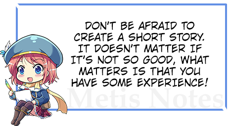

脚本 / 代码编辑器
在右侧，您可以看到显示当前选定扩展文档内容的代码编辑器。 Visual Novel Maker 使用 ACE 代码编辑器，有关 ACE 本身的信息，请参阅www.ace.c9.io 。您可以使用 CTRL+,(逗号) 或 CMD+,(逗号) 打开 ACE 设置，在那里您可以更改字体大小等内容。 创建扩展
如果您是一名开发者，并且希望为 Visual Novel Maker 添加新功能，可以使用此指南作为起点。如果您需要更多帮助，请查看
插件 API 参考，并查看我们的论坛。要创建扩展，只需通过菜单“ 工具 > 开发人员工具 > 创建扩展…”打开扩展创建器。但是，在创建扩展之前，您需要通过对编辑器或游戏引擎进行一些更改来开发它。
修改游戏引擎要修改游戏引擎，只需通过菜单“视图 > 脚本”打开脚本编辑器
。在这里，您可以看到所有可以修改甚至删除的游戏脚本。如果您想扩展一个脚本/类，建议创建一个新脚本而不是直接修改某个脚本。否则会发生扩展之间的冲突。修改游戏编辑器要修改编辑器，只需通过菜单“视图 > 扩展
”打开扩展编辑器。
在扩展编辑器中，您可以创建/修改编辑器的以下元素。数据记录视图数据记录视图描述了数据库中的一个类别。它包含一个类别数据记录的名称、后端字段和整个 UI。您可以看到所有现有类别，如角色等，并可以修改甚至删除它们。但是，不建议删除“系统”数据记录视图，因为出于内部技术原因，该视图必须始终存在。
场景命令
场景命令描述了场景视图中的单个命令，用户可以使用它来定义场景的逻辑。所以您可以在这里添加新命令，甚至修改或删除现有命令。
JavaScript 文件可供视图或场景命令使用，用于在运行时定义常量、计算文本或其他逻辑，或在设计时组合 JSON。
Objective-J 文件
 Objective-J 文件可用于创建自定义 UI 控件、资源管道处理器、更强大的脚本代理以及其他需要更多控制的事务。文件
Objective-J 文件可用于创建自定义 UI 控件、资源管道处理器、更强大的脚本代理以及其他需要更多控制的事务。文件
 名
名
 与 Objective-J 类名
与 Objective-J 类名
匹配很重要。 语言包
语言包
语言包可用于将视图和场景命令的 UI 翻译成不同的语言。 使用 JSON 设计视图
使用 JSON 设计视图
视图是使用 JSON 定义的。因此，除了在运行时计算文本或其他小型逻辑之外，不需要实际的编程。您只需定义各个部分和 UI 控件，并描述它们应如何处理数据以及数据应写入哪个后端字段。
视图分为几个部分，每个部分都可以有边框+标题以及要显示的项目的列表。项目是允许用户与视图交互的 UI 控件。有许多不同类型的项目，如文本字段、复选框、单选按钮等。您可以在
插件 API 参考
案例示例
请查看下面的示例，以了解如何制作自己的扩展。
示例 1：添加新的数据库类别本教程教您如何为编辑器的数据库添加新类别。示例 2：添加新的场景命令
Visual Novel Maker 附带了许多有用的内置命令，可以轻松创建自己的视觉小说。但是，在特殊情况下，根据视觉小说的复杂性，内置命令可能不够，或者有必要修改它们。示例 3：在脚本端实现新命令在我们最后一个示例中，我们向编辑器添加了一个新的场景命令。但是，如果我们现在使用该场景命令，它将没有游戏内效果，因为我们还没有为该命令实现逻辑。为此，我们必须在“视图 > 脚本”下打开脚本编辑器。
